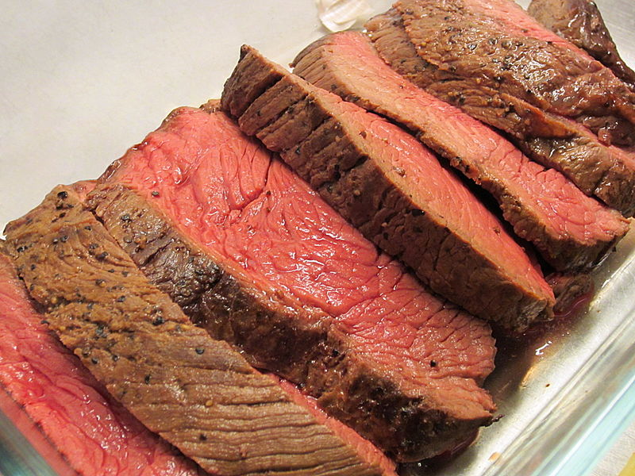

High Temp Roast Beef

This recipe takes a very tough piece of meat and makes it so tender and delicious!
Feel free to improvise with the seasonings and use garlic salt in place of regular salt.
The easiest roast you'll ever cook!
Ingredients
- 3lb beef eye of round roast
- salt and pepper to taste
Instructions
- Preheat the oven to 500 degrees F (260 degrees C).
Season the roast with salt and pepper and place in a roasting pan or baking dish.
Do not cover or add water.
- Place the roast in the preheated oven.
Reduce the temperature to 475 degrees F (245 degrees C).
Roast for 21 minutes (seven minutes per pound) then turn off the oven
and let the roast sit in the hot oven for 2 1/2 hours. Do not open the door at all during this time!
- Remove the roast from the oven,
the internal temperature should have reached at least 145 degrees F (65 degrees C).
Carve into thin slices to serve.